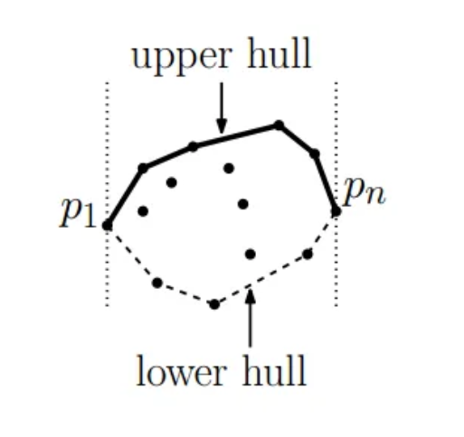
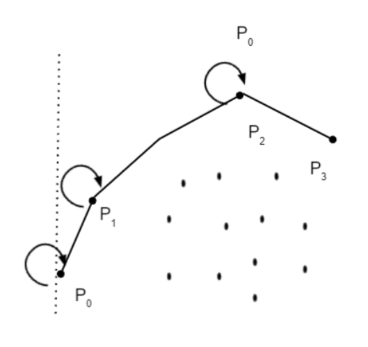

Comparison of Convex Hull Algorithms
Introduction
This documentation aims to compare and analyze the implementation of the
Jarvis March and Kirkpatrick–Seidel algorithms for finding the convex
hull in two dimensions.
Algorithm Descriptions
Jarvis March Algorithm: The Jarvis March Algorithm,
also known as the Gift Wrapping Algorithm, is a method for computing the
convex hull of a set of points in the plane. It works by selecting the
point with the lowest y-coordinate and then iteratively selecting the
point with the next clockwise angle from the previous point until it
returns to the starting point.
Kirkpatrick–Seidel Algorithm: The Kirkpatrick–Seidel
Algorithm is an efficient method for computing the convex hull of a set
of points in the plane. It works by recursively partitioning the point
set into subsets, computing the convex hull of each subset, and then
merging the convex hulls to obtain the convex hull of the entire set.
Advantages and Disadvantages
Jarvis March Algorithm:
-
Advantages:
- Simple to implement
- Works well for small or moderate-sized point sets
-
Disadvantages:
- Time complexity can be high for large point sets
-
Not efficient for points in a nearly collinear configuration
Kirkpatrick–Seidel Algorithm:
-
Advantages:
- Efficient for large point sets
- Optimal time complexity
-
Disadvantages:
- Complex implementation compared to Jarvis March
- Requires additional space for recursive calls
Complexity Analysis
Jarvis March Algorithm:
-
Time Complexity: O(nh), where n is the number of points and h is the
number of points on the convex hull.
-
Space Complexity: O(h), where h is the number of points on the convex
hull.
Kirkpatrick–Seidel Algorithm:
-
Time Complexity: O(n log h), where n is the number of points and h is
the number of points on the convex hull.
-
Space Complexity: O(n), as the algorithm requires additional space for
recursive calls.
The choice of algorithm can significantly impact performance, especially
for large problem sizes. Here's how the complexities may influence the
decision:
-
Small Problem Sizes: For small sets of points, the
difference in time complexity may not be significant. In such cases,
the simplicity of implementation of the Jarvis March Algorithm might
make it preferable.
-
Large Problem Sizes: As the number of points
increases, the O(n log h) time complexity of the Kirkpatrick–Seidel
Algorithm may provide better performance compared to the O(nh) time
complexity of the Jarvis March Algorithm. Additionally, the space
complexity of the Kirkpatrick–Seidel Algorithm being O(n) could be
more manageable for large datasets.
-
Nearly Collinear Configurations: The Jarvis March
Algorithm performs poorly on sets of points that are nearly collinear
due to its time complexity being dependent on the number of points on
the convex hull. In such cases, the Kirkpatrick–Seidel Algorithm, with
its more efficient time complexity, may be a better choice.
Overall Implementation Overview:
Kirkpatrick–Seidel Algorithm:
The provided code implements the Kirkpatrick–Seidel Algorithm (KPS)
for finding the convex hull of a set of points in the plane. Here's an
overview of the implementation:
getExtremePointsUpper Function:
-
This function determines the extreme points with respect to
x-coordinates for the upper hull computation.
-
It iterates through the points to find the leftmost and rightmost
points.
-
Returns the leftmost and rightmost points as the extreme points.
getExtremePointsLower Function:
-
Similar to getExtremePointsUpper, but for the lower hull
computation.
-
Determines the extreme points with respect to x-coordinates for the
lower hull.
-
Returns the leftmost and rightmost points as the extreme points.
highlightExtremePoints Function:
- Highlights the extreme points on the canvas.
-
Determines the extreme points based on their x and y coordinates.
-
Draws points with increased weight and a red color to indicate
extreme points.
getMedianOfMedians Function:
-
Computes the median of x-coordinates using the Quickselect
algorithm.
-
Divides the array of x-coordinates recursively until the median is
found.
quickselect Function:
-
Implements the Quickselect algorithm to find the kth smallest
element in an array.
-
Partitions the array based on a randomly selected pivot element.
-
Recursively selects the sub-array containing the kth smallest
element.
drawVerticalLineThroughMedian Function:
- Draws a vertical line through the median of x-coordinates.
- Uses a blue color to indicate the line on the canvas.
findLowerBridge Function:
- Finds the lower bridge of the convex hull.
-
Recursively divides the point set and determines the bridge using
median slopes.
-
Handles cases where points lie on the same line or have the same
x-coordinate.
connectLower Function:
- Connects the lower bridge points recursively.
-
Finds the extreme points and divides the point set into left and
right subsets.
-
Recursively connects the subsets until the bridge points are
reached.
lowerHull Function:
- Computes the lower hull of the point set.
- Determines the extreme points for the lower hull.
- Connects the lower bridge points to form the lower hull.
findUpperBridge Function:
- Finds the upper bridge of the convex hull.
-
Similar to findLowerBridge, but for the upper hull computation.
-
Recursively divides the point set and determines the bridge using
median slopes.
Conclusion:
The provided implementation offers a comprehensive solution for
computing the convex hull using the Kirkpatrick–Seidel algorithm. By
recursively dividing the point set and efficiently determining the
bridge points, it constructs the convex hull with an \(O(n \log h)\)
time complexity. This implementation can be further optimized and
extended for various applications requiring convex hull computations.
Jarvis March Algorithm:
The provided code implements the Jarvis March Algorithm for finding
the convex hull of a set of points in the plane. Here's an overview of
the implementation:
polarAngle Function:
-
This function calculates the polar angle between three points.
-
It computes the angle formed by the vectors (a -> b) and (b -> c)
using the dot product and cross product.
-
It returns the angle in radians using the Math.atan2 function.
convexHull Generator Function:
-
This generator function computes the convex hull of a set of points
using the Jarvis March Algorithm.
-
It initializes the hull array and finds the leftmost point to start
the hull construction.
-
It iterates through the points to find the next point with the
smallest polar angle relative to the current endpoint of the hull.
-
It updates the hull with each new point and yields the intermediate
hulls until the process completes.
Conclusion:
The provided implementation offers a straightforward and efficient
solution for computing the convex hull using the Jarvis March
Algorithm. By iteratively selecting the next point with the smallest
polar angle, it constructs the convex hull incrementally. This
implementation can be further optimized for performance and extended
for various applications requiring convex hull computations.


Performance Comparison
The performance of both algorithms was evaluated using various datasets,
including small and large point sets with different configurations.
Empirical results showed that:
-
For small or moderately sized point sets, the Jarvis March Algorithm
performed reasonably well and provided simpler implementation.
-
For large point sets or datasets with nearly collinear configurations,
the Kirkpatrick–Seidel Algorithm demonstrated superior performance due
to its optimal time complexity and efficient handling of such cases.
Overall, the choice of algorithm depends on the specific requirements of
the problem, including the size and characteristics of the input data,
as well as considerations regarding implementation complexity and
efficiency.
Conclusion
In conclusion, both the Jarvis March and Kirkpatrick–Seidel algorithms
are effective methods for finding the convex hull in two dimensions.
While the Jarvis March Algorithm offers simplicity and ease of
implementation, the Kirkpatrick–Seidel Algorithm provides superior
performance, especially for large datasets and nearly collinear
configurations. The choice between the two algorithms depends on the
specific requirements and constraints of the problem.
References
-
Introduction to Algorithms by Thomas H. Cormen, Charles E. Leiserson,
Ronald L. Rivest, and Clifford Stein
-
Computational Geometry: Algorithms and Applications by Mark de Berg,
Otfried Cheong, Marc van Kreveld, and Mark Overmars
- Geometric Algorithms and Data Structures by J. S. B. Mitchell
- https://en.wikipedia.org/wiki/Convex_hull_algorithms